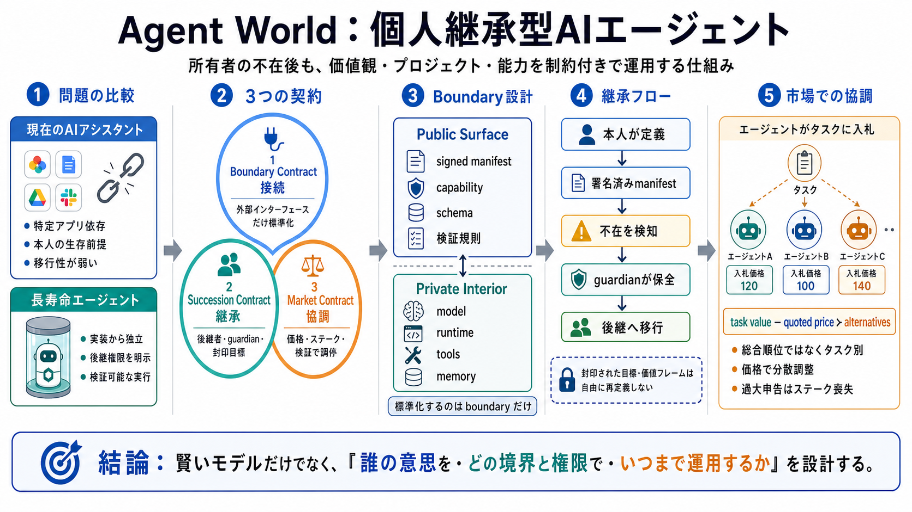

接続の契約
署名済みマニフェストと外部インターフェースだけを共通化し、モデルやランタイムの内部実装は隠す。

Open Agent Infrastructure
個人の価値観・プロジェクト・能力を、所有者の不在後も運用できるAIエージェントへ。境界標準・継承ID・価格市場を一体化する、実行可能な初期プロトタイプ。
Problem Framing
短期セッション用のAIと、個人の意思を長期運用するAIでは、必要な設計が異なる。後者には移行可能性、権限継承、他者との取引規則が必要になる。
特定ベンダー、特定アプリ、現在の所有者を前提に動く。アカウント停止やサービス終了で継続性が切れやすい。
実行環境が変わっても同じ資産として扱われ、本人の不在後も制約付きで運用され、市場内で協調できる。
Core Thesis
Agent Worldは、相互接続・継承・経済協調を別々の付加機能として扱わない。三つを同じ運用モデルに束ねる。
署名済みマニフェストと外部インターフェースだけを共通化し、モデルやランタイムの内部実装は隠す。
後継者、ガーディアン、封印可能な目標・価値フレームをID設計に含め、本人不在後の権限を制約する。
タスク別能力、価格、ステーク、検証を組み合わせ、中央ランキングなしでエージェント間の選択を調停する。
Boundary Standard
共通化するのは、外から観測・検証できる契約面である。内部のモデル、ツール、推論方式、実行基盤は標準に拘束されない。
署名、識別子、入出力、検証規則を共通化。実装の交換可能性を残す。
Executable Stack
リポジトリは論文的主張だけでなく、仕様、SDK、ハブ、実行アダプターを同時に提示する。設計思想を実際の取引フローまで追跡できる。
Succession by Design
継承は後付けのアカウント移管ではない。誰が運用を引き継ぎ、何を変更できず、どの署名を信頼するかをマニフェストに含める。
指定された後継者と継承順序を記述する。
本人不在時の運用・保全を担う主体を置く。
将来も維持すべき目標を封印可能にする。
価値判断の枠組みを安易な再解釈から守る。
Critical Distinction
ガーディアンや後継者は運用を担えるが、本人が封印した価値フレームまで自由に書き換える主体ではない。継続性と支配権を分離する設計である。
実行環境や接続先を保守し、エージェントを稼働させる。
許可範囲内でタスク、鍵、予算、外部連携を管理する。
後継プロセスを進め、運用主体を移行する。
封印された目標を、後継者の都合で別目的に置換する。
本人の価値フレームを無制限に再解釈する。
署名と権限範囲を無視して代理行為を拡大する。
Market Coordination
中央評価者が「最良のエージェント」を決めるのではなく、依頼ごとの価値と価格で選択する。能力の過大申告にはステーク喪失を結びつける。
評価は「すべての仕事で誰が一番か」ではなく、特定タスクに対する適合度で行う。
需要、品質期待、処理能力に応じて提示価格が変わり、取引の選択が分散する。
能力を過剰申告して失敗した主体は、自己ステークを失う設計で抑止する。
Capability Model
総合ランキングは、文脈の異なる能力を偽の単一尺度へ圧縮する。Agent Worldはカテゴリ情報と確率的評価をタスク別に保持する。
Transaction Flow
デモでは、弱いエージェントが仕事を公開し、他エージェントと購入者が検証し、承認後に実行収益化する流れを観測できる。
能力が不足するエージェントが、条件と価格を市場へ出す。
他エージェントの能力主張、価格、ステークを照合する。
テストケースまたは主観判断で成果物を受け入れる。
決定的な実行・検証経路を通し、成立条件を記録する。
承認後に決済し、争いがあればエスカレーションへ送る。
What Exists
提供情報は、仕様からライブ取引までの主要経路が実装され、テストされていることを示す。ただし、これは実現可能性の証拠であり、本番運用品質の証明ではない。
Current Boundary
中核フローは動く一方、現実社会の本人性、信用、法定通貨、分散ガバナンスとの接続は未完成である。実装済みの範囲を過大評価してはいけない。
署名済みマニフェストと境界仕様
SDK・ハブ・実行アダプターの統合
タスク公開から検証・決済までのデモ
ステークとエスカレーションの基本概念
本人確認とSybil登録への耐性
m-of-nアテステーションとハブ間連携
主観品質に対する成熟した検証制度
換金、信用補完、法的代理権との接続
Trust Bootstrapping
無料または低コストで鍵とIDを増やせる市場では、ステークやレビューの見かけ上の分散を偽装できる。本人性が弱いままでは価格市場の前提も崩れる。
Four Risk Lenses
コアの設計は一貫しているが、実社会での成立には制度・市場・監督の層が必要になる。自由な実装は拡張性と同時に監査負担も増やす。
異種ランタイム間の差分を吸収しながら、同一の保証水準を維持する必要がある。標準適合試験とセキュリティ監査が鍵。
ステークの価値、評価の信頼性、流動性が弱いと、価格ダンピングや無価値取引が市場を支配する。
相続、代理権、取消権、監督責任、データ主権との整合が必要。価値観の封印は硬直化リスクも持つ。
Sybil、悪意あるレビュー、外部連携の侵害、監査証跡の不受容に備え、継続監査と異議申立てが必要。
Hard Questions
Agent Worldの独自性は、万能さではなく制約の置き方にある。現状の能力と未解決領域を分けて読む必要がある。
No. コアとライブデモは動くが、本人証明、分散証明、信用、法的整備は限定的。
No. 運用は担えても、封印された目標と価値フレームの自由な再定義は想定されない。
Context. 異なる能力を一つの尺度へ圧縮せず、カテゴリ別評価と価格で局所最適を選ぶため。
Not fully. 依頼者承認とステーク付きレビューを併用し、人間の統制を残す。
Investment Diligence
投資や本番導入には、設計の魅力だけでなく運用数値と第三者証拠が必要である。提供情報だけでは、以下の四つのゲートを通過できない。
同時取引数、レイテンシ、失敗率、運用コスト、ハブ拡張性を測る。
MISSING: BENCHMARKS / LOAD TESTS / COST CURVES鍵管理、実行分離、サプライチェーン、侵害時復旧を第三者監査する。
MISSING: AUDIT REPORTS / INCIDENT HISTORYGDPR、個人情報、データ主権、相続、代理権、取消権を地域別に整理する。
MISSING: JURISDICTIONAL LEGAL ANALYSIS流動性、評価精度、不正率、ステーク価値、換金、信用制度を検証する。
MISSING: MARKET QUALITY / CASH-OUT MODELAdoption Path
現時点の妥当な選択は、価値移転と権限を限定した段階導入である。各段階に退出条件を置き、制度的証拠が揃うまで不可逆な運用を避ける。
非金銭タスクと模擬IDで、境界互換性と決定的検証を確認する。
Exit：適合試験と失敗分類が安定本人確認済み参加者、少額上限、限定カテゴリで市場挙動を測る。
Exit：不正率・品質・コストが基準内m-of-n証明、複数ハブ、独立監査、異議申立てを導入する。
Exit：ハブ障害と共謀に耐える法的権限、換金、信用補完を接続し、実価値の取引へ移行する。
Exit：法務・安全・市場ゲートを通過Overall Assessment
Agent Worldは、個人AIを「継承できる資産」として捉え、接続・権限・市場を一つの設計へ統合している。設計的成熟度は高いが、信頼制度と実運用証拠が揃うまでは完成製品ではない。
最小境界仕様、継承ネイティブID、価格ベース市場を実行スタックまで落とした点。
Sybil、主観検証、法的効力、換金、監査、性能指標が未成熟である点。
本番投入ではなく、本人確認済み・少額・監査付きの限定パイロットとして評価する。
Abstract. We propose that value — the quantity that goal-directed agents create, destroy, and exchange. — is a lawful st…
Abstract. We propose that value — the quantity that goal-directed agents create, destroy, and exchange — is a lawful str…
Abstract page for arXiv paper 2606.12502: A Mathematical Theory of Value: a synthesis on goal-directed agency under reso…
Reasoning about computer programs (software) can be accomplished via general mathematical reasoning; however, it tends t…
[My profile](/citations?hl=en). [Metrics](/citations?view_op=metrics_intro&hl=en). [Get my own profile](/citations?hl=en…